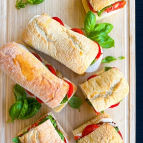

← All recipes
Caprese Sandwich

Servings: Servings: 4 sandwiches · Prep: 15 mins · Cook: 5 mins
Ingredients
- 1X 2X 3X
- 4-6 ciabatta rolls, see notes for details and alternatives
- 1 pound fresh mozzarella, sliced
- 1 ½ pounds fresh Campari or Roma tomatoes, cut into roughly ½ inch slices
- 1 large handful fresh basil leaves
- 1 large garlic clove, peeled
- Good-quality thick balsamic vinegar
- Extra virgin olive oil
- Coarse finishing salt, to taste
Directions
- Preheat oven to the broil setting. Slice the rolls lengthwise to create both top and bottom pieces.
- Broil.
- Broil the bread for a brief 2-4 minutes until it warms and just starts to toast.
- Flavor.
- Rub a peeled garlic clove on each piece of bread.
- Moisten.
- Drizzle each piece with olive oil, making sure to be generous without saturating.
- Layer.
- Place mozzarella slices over each bottom piece. Add tomato slices to completely cover the mozzarella. Layer basil leaves over the tomatoes.
- Drizzle.
- Drizzle the bottom halves with balsamic and sprinkle with salt.
- Serve.
- Complete the sandwiches by adding the top halves. Enjoy!
- Preheat oven to broil. Slice rolls lengthwise with a sharp knife to create tops and bottoms.
- Lay the tops and bottoms cut-side up on a baking sheet. Broil bread for 2-4 minutes until warm and just starting to toast.
- Remove from the oven and rub the peeled garlic clove on each piece of bread. You may not use the whole clove.
- Drizzle each piece will olive oil (generously but not soaking).
- Lay mozzarella slices across each bottom piece of bread, covering completely. Add tomato slices, completely covering the mozzarella. Add basil leaves, completely covering the tomato slices.
- Drizzle bottom halves with balsamic. Sprinkle with salt.
- Add top halves. Slice sandwiches in halve if desired. Enjoy!
Notes
Ciabatta is classic! The amounts listed above are specifically for 4 long, rectangular ciabatta roll sandwiches. If you can only find small square rolls, this recipe will yield about 6 sandwiches. If you use a full ciabatta loaf, it will yield about 4 large sandwiches. If you can’t find ciabatta, you can also use focaccia, a baguette, or really any other bread or rolls you desire.
I like to buy pre-sliced fresh mozzarella to make life easier! You can slice your own mozzarella if preferred. You can also use buffalo mozzarella!
Original source: tastefullygrace.com